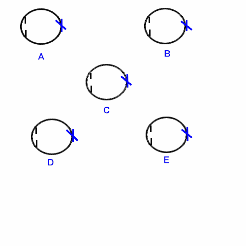

Astigmatism
* Định nghĩa:
+ Loạn thị.
- Compound ~ : loạn thị kép là loạn thị mà cả hai kinh tuyến chính của một mắt hoặc đều là viễn thị (Compound Hypermetropic Astigmatism) hoặc đều là cận thị (Compound Myopic Astigmatism)
- Hyperopic ~ : loạn thị viễn

Hình: Các thể loạn thị lâm sàng
A: Loạn cận kép, B: Loạn cận đơn, C: Loạn hỗn hợp,
D: Loạn viễn đơn, E: Loạn viễn kép
- Mixed ~ : loạn thị hỗn hợp là loạn thị mà một kinh tuyến chính là viễn thị và kinh tuyến kia là cận thị
- Myopic ~: loạn cận
- Simple ~ : loạn đơn thuần là loạn thị mà chỉ một kinh tuyến chính của mắt chính thị và kinh tuyến kia cận thị (Loạn cận đơn = Simple Myopic Astigmatism) hoặc viễn thị (Loạn viễn đơn = Simple Hypermetropic Astigmatism)